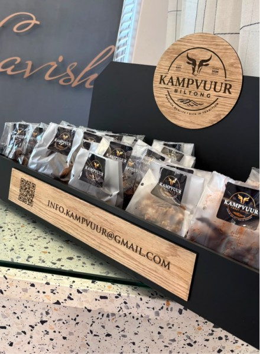
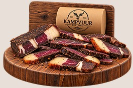
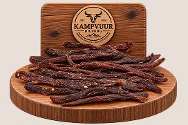
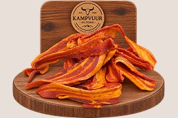
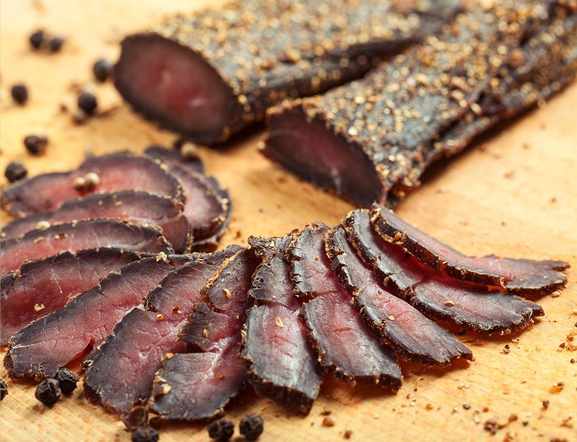
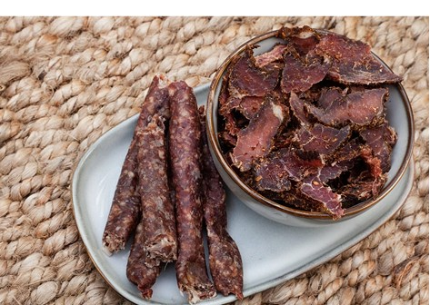

Choose From Our Selection
Explore our selection of premium biltong, carefully made for the taste of tradition.
Experience authentic South African biltong, cured
with traditional spices and air-dried to perfection.
Kampvuur Biltong isn’t only for the family snack cupboard.
We supply businesses looking to give their customers something delicious to grab while they shop, wait or go about their day.
Our biltong is ideal for salons, barbershops, small retailers, cafés, offices, reception areas, service businesses and other customer-facing spaces where a convenient, quality snack is always welcome.
Whether you’re looking to stock a few bags at your counter or offer biltong as an extra treat for your customers, we make it easy to bring The Taste of Tradition to your business.
Interested in stocking Kampvuur Biltong? Get in touch with us.

In 3 easy steps
Explore our selection of premium biltong, carefully made for the taste of tradition.
Next, we will provide samples for your consideration.
Stock is purchased on a direct sale basis.
Taste the Tradition of Real South African Biltong

Thinly sliced biltong infused with crushed birdseye chilli for a sharp, lingering kick.
Thinly sliced biltong infused with crushed birdseye chilli for a sharp, lingering kick.
Thinly sliced biltong infused with crushed birdseye chilli for a sharp, lingering kick.
Thinly sliced biltong infused with crushed birdseye chilli for a sharp, lingering kick.

Thinly sliced biltong infused with crushed birdseye chilli for a sharp, lingering kick.

Thinly sliced biltong infused with crushed birdseye chilli for a sharp, lingering kick.
Thinly sliced biltong infused with crushed birdseye chilli for a sharp, lingering kick.
Thinly sliced biltong infused with crushed birdseye chilli for a sharp, lingering kick.
Thinly sliced biltong infused with crushed birdseye chilli for a sharp, lingering kick.
At Kampvuur Biltong, we believe great biltong is more than just a snack — it’s a taste of tradition.
Made with carefully selected meat, time-honoured techniques and a passion for authentic South African flavour, our biltong is crafted to deliver that rich, unmistakable taste with every bite.
From classic favourites to bold new flavours, we’re proud to keep the tradition alive while putting our own stamp on it.
The Taste of Tradition — made to be shared, savoured and enjoyed.

FAQ

We do not operate on a consignment basis. We provide samples for your consideration, and all stock is supplied on a direct-sale basis.
Our commitment is fresh, premium quality biltong and professional service. If any product is within its expiry period and experiences a change in colour, fading or spoilage, we will replace the stock for free, subject to verification. Genuine concerns are handled promptly and professionally.
Biltong must be stored in a cool, dry, well-ventilated place. Always keep it away from direct sunlight and moisture, and refrigerate softer biltong if you prefer it to stay fresh for longer.